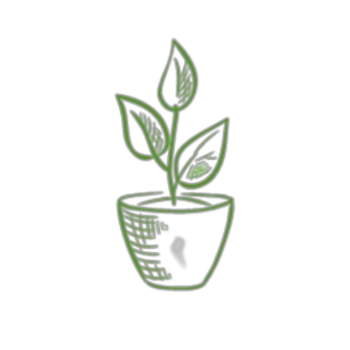

FOOD CPR - COMPOST. PLANT. REDUCE
FOOD CPR - COMPOST. PLANT. REDUCE
Did you know? Research shows that Malaysians contribute to more than 16,000 tonnes of food waste daily, enough to feed 12 million hungry mouths three meals a day. The shocking figure continues to worsen during the festive seasons by 15 to 20 percent.
In an initiative to manage food waste effectively, Sunway Pyramid has invested in a food composting machine to convert food waste from tenants into compost.
“Sunway Group is committed to advancing the United Nation’s Sustainable Development Goals, one of which is halving Malaysia’s food waste by 2030 – a pledge made by our local government. If we, the nation, continue at our current rate, this pledge would not be met. The ‘COMPOST. PLANT. REDUCE’ campaign is one of our clear commitments to changing food waste habits in Malaysia,” said HC Chan, Chief Executive Officer of Sunway Malls & Theme Parks.
Together, we can reduce the amount of waste generated to our landfills for a more sustainable environment. Small changes can make a huge difference, and it starts with a few simple steps!
COMPOST COLLECTION @ B1 BLUE ZONE CARPARK LOBBY
Bring home a bag of compost from our Food CPR Station for gardening or planting purposes.
HOW TO USE OUR COMPOST
ENHANCE SOIL FOR POTTED PLANTS
Dig a small hole in the soil 5cm away from the plant, fill the hole with 2 tbs of compost & cover it up
ENHANCE SOIL FOR ROOTED TREES
Dig a small hole in the soil 10cm away from the plant, fill the hole with 4 tbs of compost & cover it up
MAKE COMPOST POT MIX
Mix soil with compost (2:1 ratio) and let it dry under the sun for at least 2 weeks before use
SEEDING NEW PLANTS
Fill pot with soil & 1 tbs of compost, let nutrients absorb for a week before planting seeds